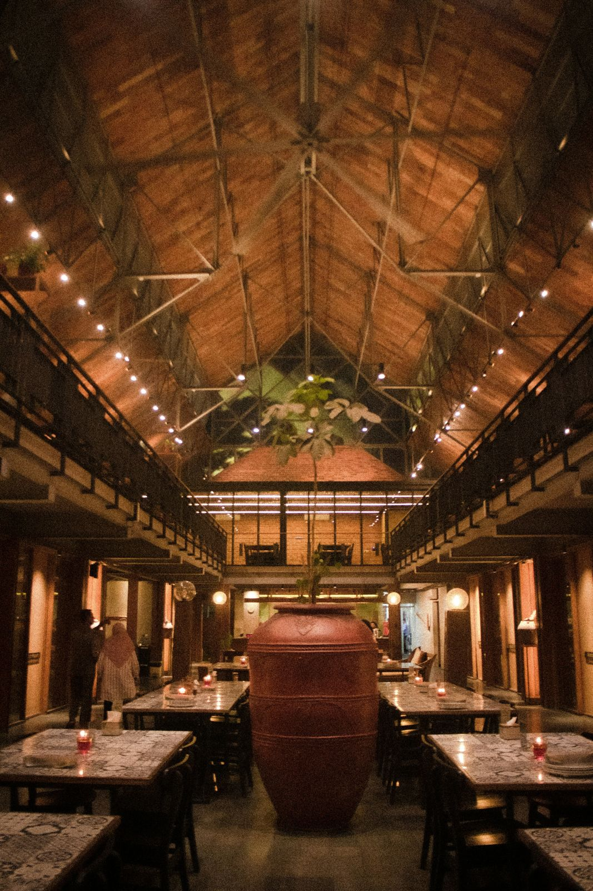
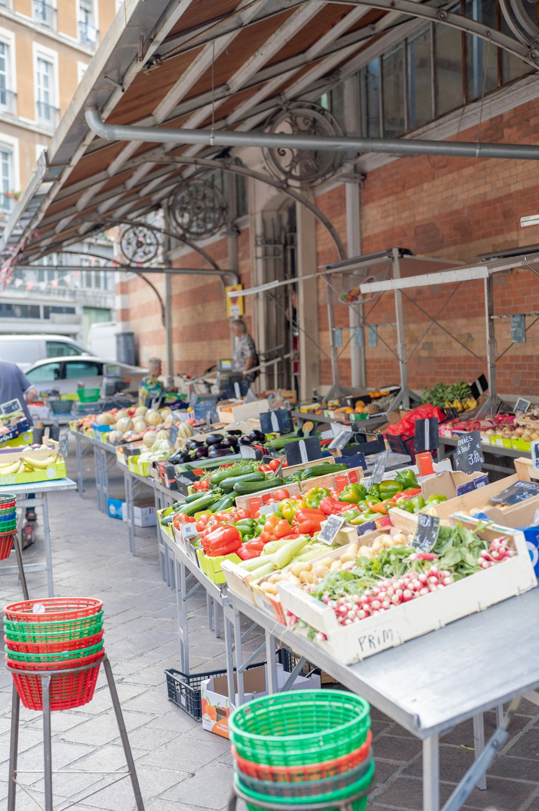

Le restaurant
Un ancien atelier de tapissier devenu bistrot de quartier, une cuisinière passionnée et neuf producteurs de la région nantaise.
Léonie, ou l'envie de cuisiner au rythme du marché

Formée à l'école hôtelière de Saint-Nazaire, Léonie Garnier a passé dix ans dans les cuisines de brasseries parisiennes avant de revenir dans sa ville natale. Son idée était simple : une petite salle, une carte courte, et uniquement ce que les producteurs ont de meilleur au moment présent.
En 2019, elle reprend un ancien atelier de tapissier près du marché de Talensac. Les murs en pierre et les grandes verrières sont restés, le comptoir en zinc est arrivé d'une brocante de Clisson.
Aujourd'hui, l'équipe compte cinq personnes. Hugo Lemaire, en salle, a constitué une carte de vins exclusivement ligériens, avec une large place aux vignerons en agriculture biologique.
Ceux qui remplissent notre cuisine chaque semaine
Neuf producteurs, tous situés à moins de 60 km du restaurant. Nous les payons au juste prix et leurs noms figurent sur notre ardoise.

- Les Jardins de la ChézineLégumes de saison, Saint-Herblain · 8 km
- Criée de La TurballePoissons de petite pêche côtière · 75 km
- Ferme de la GâtineŒufs et volailles fermières, Vertou · 12 km
- Laiterie du Pont-RousseauCrème crue, beurre et fromages frais · 6 km
- Domaine des Trois CoteauxMuscadet en agriculture biologique, Clisson · 30 km
- Moulin de la SèvreFarines anciennes pour notre pain, Gétigné · 35 km
Noms des producteurs fictifs.
La maison rien que pour vous
Anniversaire, repas d'équipe, baptême ou fin de séminaire : la salle se privatise le dimanche et le lundi, de 12 à 32 convives, avec un menu composé sur mesure avec Léonie.
- Menu unique de 45 € à 65 € par personne, boissons en sus
- Accord mets et vins proposé par Hugo
- Devis gratuit sous 72 heures
Une table pour ce midi ou ce soir ?
32 couverts en salle, 16 en terrasse aux beaux jours. Les tables se remplissent vite le jeudi et le vendredi.